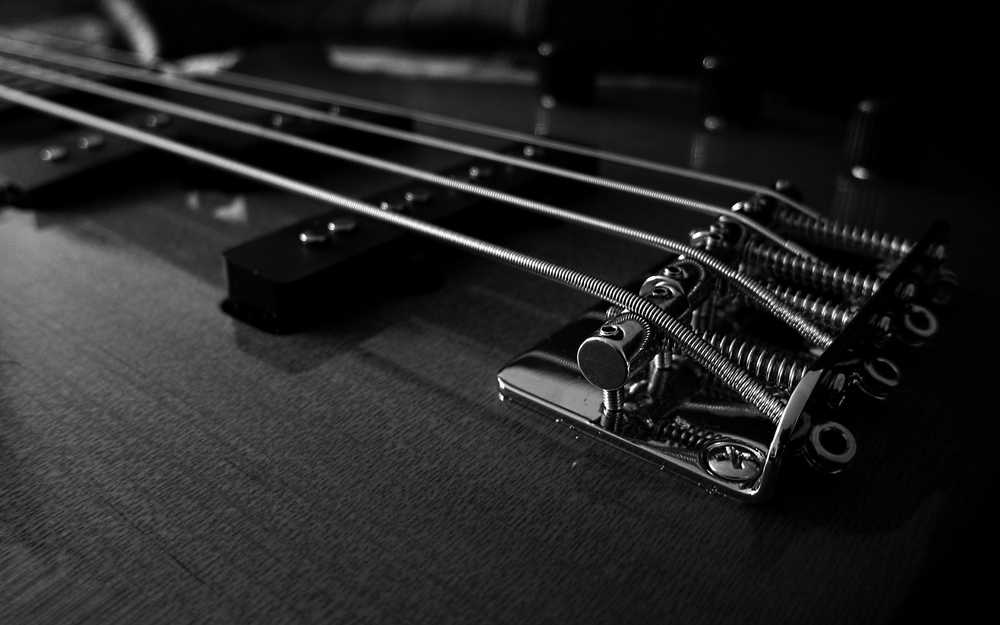

La teoria musical es muy compleja de entender, pero empezemos con lo basico.
La música nos alegra, nos entristece, nos activa, nos hace bailar, nos emociona... Aquí tienes algunas buenas frases de cantantes, compositores y hasta físicos que resumen los sentimientos que nos provocan las notas musicales cuando llegan a nuestros oídos.
"La música es una revelación mayor que toda la sabiduría y la filosofía". Beethoven.
“Normalmente, cuando una persona tiene un problema serio en la vida, se refleja en su música”. Kurt Cobain, líder de Nirvana.
“Siempre estoy quejándome de lo difícil que es componer o de lo que sufro cuando lo estoy haciendo, que cada canción que he escrito ha sido casi una auténtica tortura”. John Lennon.
“El más antiguo, el más verdadero y el más bello órgano de la música, el origen del cual nuestra música debe provenir, es la voz humana”. Richard Wagner.
Piano
El piano (acortamiento de «pianoforte», palabra que en italiano está compuesta por los términos «piano», «suave», y «forte», «fuerte») es un instrumento musical armónico clasificado como instrumento de teclado y de cuerdas percutidas por el sistema de clasificación tradicional, y según la clasificación de Hornbostel-Sachs es un cordófono simple. El músico que toca el piano se llama pianista.
Guitarra
Es el instrumento más utilizado en géneros como blues, rock y heavy metal, sobre todo en su variante eléctrica, mientras que en el flamenco se suele usar una guitarra española con ligeras variaciones, conocida como guitarra de flamenco. La guitarra clásica es también bastante frecuente entre los cantautores, así como en el folclore de varios países.

Bajo/Bass
El bajo eléctrico, llamado sencillamente bajo,1 es un instrumento musical melódico de la familia de los cordófonos, similar en apariencia y construcción a la guitarra eléctrica, pero con un cuerpo de mayores dimensiones, un mástil de mayor longitud y escala y, normalmente, cuatro cuerdas afinadas según la afinación estándar del contrabajo, su antecesor